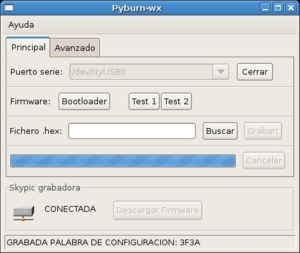
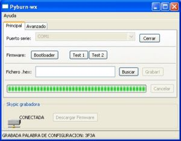
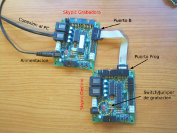
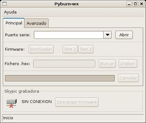
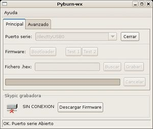
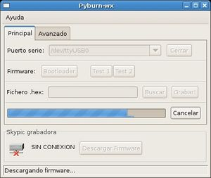
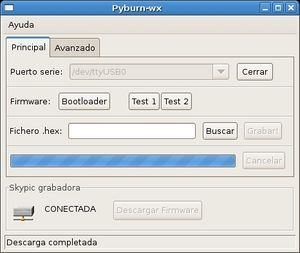
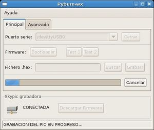

Software Multiplataforma para la grabación de firmware en microcontroladores PIC usando la tarjeta Skypic como circuito programador. Pyburn permite grabar firmware en una Skypic utilizando como grabadora otra tarjeta Skypic.
Normalmente, para la descarga de programas en la Skypic se utiliza la aplicación Pydownloader. Sin embargo, es necesario previamente tener grabado el Bootloader. Para ello necesitamos disponer de un programador. Si tenemos una Skypic que ya tiene grabado el bootloader, la podemos utilizar como una tarjeta programadora para grabar el bootloader o cualquier fichero .hex en otras Skypics.
| 
Pantallazo de pyburn-1.0 en Gnu/Linux |

Pantallazo de pyburn-1.0 en Windows XP |

Necesitamos dos tarjetas Skypic, que denominaremos grabadora y Destino.
Para la conexión se utiliza un cable de bus de 10 hilos. Por un lado se conecta al puerto B de la Skypic grabadora y por el otro al puerto PROG de la Skypic destino.
Como ejemplo grabaremos el Bootloader en la Skypic destino.
Primero realizamos todas las conexiones necesarias:
Ahora ejecutamos el pyburn y seguimos los siguientes pasos:
| 
Pyburn nada más arrancarlo. Lo primero es seleccionar el puerto serie donde está conectada la Skypic grabadora |

Puerto serie Abierto, pero en la grabadora no se ha detectado el Firmware necesario |
| 
Descargando el Firmware necesario para realizar la grabación |

La tarjeta Skypic grabadora ha sido detectada. Se puede comenzar la grabación |
| 
Grabando el Bootloader en la Skypic destino |
| Fichero | Descripción |
|---|---|
| Pyburn-wx-1.0.tar.gz | Fuentes |
| pyburn-wx_1.0-1_i386-ubuntu-9-04.deb | Paquete para Ubuntu 9.04 |
| Pyburn-wx_1.0-1_i386.deb | Paquete para Debian/Etch |
| pyburn-wx-1.0.win32.exe | Autoinstalable para Windows XP |
Pyburn es Software libre distribuido bajo la licencia GPL v3.0
Hay que descargar e instalar los siguientes paquetes. Utilizar las opciones que vienen por defecto:
Si se han utilizado las opciones que vienen por defecto en los instaladores, el pyburn se encuentra en el directorio: C:\python25\Scripts. El ejecutable es pyburn-wx.
El Pyburn está programa en Python por lo que es totalmente portable a otras distribuciones de Linux/FreeBSD. Para que funcione es necesario tener instalado:
Finalmente, para instalar el Pyburn, descargar el paquete fuente, descomprimirlo, entrar en el directorio pyburn-wx-1.0 y ejecutar:
python setup.py install
Para ejecutarlo:
pyburn-wx
La versión actual se puede obtener así:
svn co http://svn.iearobotics.com/pyburn/pyburn-wx/pyburn-wx-1.0/
Ejecutar los siguientes comandos:
svn export http://svn.iearobotics.com/pyburn/pyburn-wx/pyburn-wx-1.0/ pyburn-wx-1.0 cd pyburn-wx-1.0/ chmod a+x debian/rules dpkg-buildpackage -rfakeroot
Si no ocurren errores, se habrá creado el paquete .deb en el directorio padre
Bajar la versión del SVN:
svn co http://svn.iearobotics.com/pyburn/pyburn-wx/pyburn-wx-1.0/ cd pyburn-wx-1.0
Crear el ejecutable:
python setup.py bdist --formats=wininst
Se quieren crear los ficheros .tar.gz y .zip con las fuentes del proyecto. Los pasos a seguir son: Bajar la versión desde el SVN:
svn co http://svn.iearobotics.com/pyburn/pyburn-wx/pyburn-wx-1.0/ cd pyburn-wx-1.0
Crear el fichero con las fuentes:
python setup.py sdist --formats=gztar,zip
Los ficheros fuente creados son dist/pyburn-wx-1.0.tar.gz y dist/pyburn-wx-1.0.zip